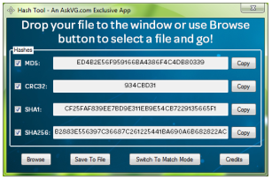
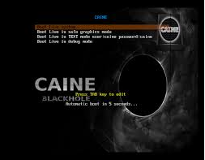

Las clonadoras de datos

Este tipo de dispositivos hardware se utilizan en informática forense para la obtención de un clon exacto de un dispositivo de almacenamiento. Es vital obtener este tipo de clonaciones ya que JAMÁS debe trabajarse sobre el dispositivo que almacena los datos origianales objeto de estudio. Las clonadoras varían mucho de precio, siendo un factor fundamental la velocidad de clonado, el número de copias simultáneas que puede generar el dispositivo y si éste es capaz de generar el código hash que certifica el contenido del dispositivo.
Las bloqueadoras
Este tipo de dispositivos hardware se utilizan para conectar el dispositivo objeto de estudio a nuestra estación de trabajo impidiendo que el sistema pueda realizar cualquier tipo de escritura en el dispositivo, lo que lo invalidaría como prueba. Así mismo, las bloqueadoras también se utilizan para proteger contra escritura cualquier dispositivo de almacenamiento.
Generadores de códigos hash

Normalmente se trata de software que nos generará el código hash identificativo de cada uno de los ficheros electrónicos que estamos estudiando o del dispositivo de almacenamiento completo. Ello se usa para acreditar que las copias de datos se corresponden fielmente con los originales. Uno de los más comunes es FCIV.
Herramientas de firma electrónica

Pese a no ser una herramienta estrictamente forense, sí que deberá utilizarse para firmar, con código de fecha y hora, la documentación que elaboremos para recoger el estudio forense realizado a fin de demostrar su autenticidad. Una de las herramientas mas comunes, potentes y gratuitas es XolidoSign.